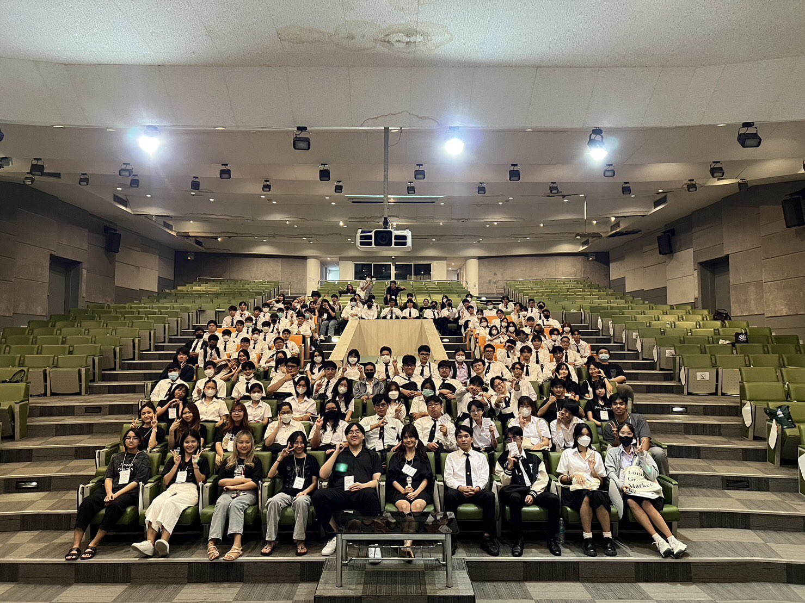

CSTU38 FIRSTMEET

เป็นกิจกรรมที่จัดโดยรุ่นพี่ปี2 ในวันที่6 สิงหาคม เวลา8.30-16.00 ใต้ตึกบร.2
โดยกิจกรรมนี้ทําให้ได้รู้จักเพื่อนและรุ่นพี่ใหม่และทําให้ได้รู้จักตึกเรียนและสถานที่ต่างๆของคณะวิทยาศาสตร์